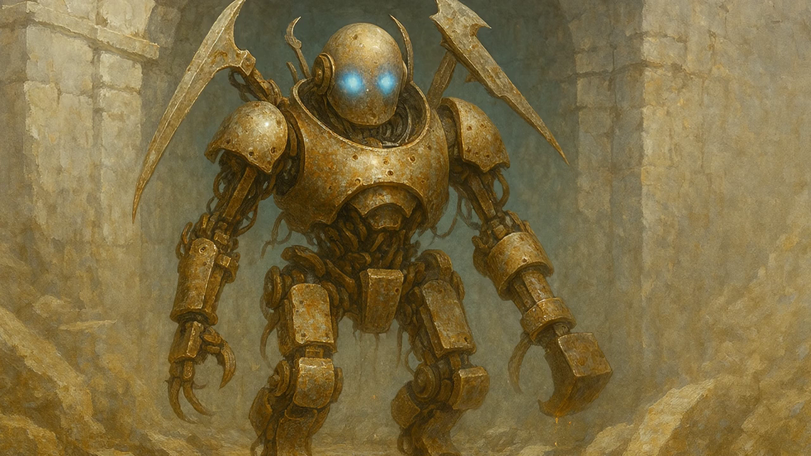
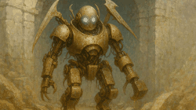

The Crystal Citadel.
Beyond the jagged white peaks lies a frozen basin where even the wind dares not stir. The snow there is ancient, untouched, and the ice glitters like glass across the plain. From this stillness rises the Crystal Citadel, a shard of the world itself thrust skyward. It is no fortress of walls or battlements, but a living monument of crystal—towers spiraling upward in jagged elegance, refracting pale light into fractured rainbows. At its heart, the central spire glows faintly, pulsing with a cyan radiance like the beat of a sleeping heart.
The Citadel is the last surviving relic of the Shattered Age, a time when Edson blazed with brilliance. Its people, the descendants of Earth, carried fragments of an older legacy across the stars. From those fragments they forged marvels: cities suspended on lattices of crystal and light, engines that bent gravity itself, networks of energy coursing across continents. They spoke through the air, traversed oceans in heartbeats, and shaped matter as easily as clay.
All else has fallen into ruin.
But still the Citadel endures—
a solitary monument to mastery,
a silent witness of an age that once blazed brighter than the suns.

The Hidden Chamber
Beneath the radiant towers of the Crystal Citadel, deeper than stone or memory, lies a chamber older than the Citadel itself. It is a vast, circular vault, its walls alive with crystal veined in violet and white. These veins pulse in slow rhythm, like the steady breath of some unseen colossus slumbering in the dark.
At the center stands a monolith of black stone—immovable, eternal, its surface marked by inscriptions so eroded that their language has been swallowed by time. No scholar has unraveled them, no sage dared to claim their meaning. Yet all agree the stone itself radiates a gravity of presence, as though it remembers truths the world has long forgotten.
Upon the summit of the monolith rests a solitary crystal, no larger than a clenched fist. Its heart glows with a golden core, but not with ordinary light. This is the Yellow Crystal—Insight. It does not shine outward like a lamp; rather, it turns sight inward, unveiling currents that do not belong to the one who gazes within.
Those who dare to look into its depths speak of fleeting visions: half-formed memories, thoughts that are not their own, faces and places glimpsed for an instant before dissolving into nothing. Truths twist into lies, and lies into deeper deceits, until the boundary between what is seen and what is believed collapses.
The chamber is silent. Yet in that silence, the Yellow Crystal whispers—not with sound, but with revelation. And revelation is a dangerous thing.

Weyrnhouse Stronghold
The high-walled Weyrnhouse Stronghold looms against the cliffside like the fossil of some petrified beast. Its shattered towers jut outward like broken vertebrae, remnants of a spine too stubborn to collapse entirely into ruin.
Hewn directly from the jagged flanks of the Blackfang Mountains, Weyrnhouse was born of basalt and blood. Its corridors carry the weight of ancient slaughter, every stone darkened by memory. Outside, the wind howls endlessly over the cliffs; within, silence clings close, broken only by the faint crackle of fire—as though the stronghold itself draws breath but refuses to release it.
At the far end of the courtyard stands its most enduring feature: the ancient gates of Weyrnhouse. Twin slabs of charred iron, forged in a forgotten age, they remain sealed each night and opened each dawn, their hinges groaning with the memory of centuries. Legends claim they have endured fire, siege, and the fury of mountain tremors without faltering. To the scattered folk who dwell beneath the Blackfang peaks, the gates are eternal—unbreakable as the mountains themselves.
Thus Weyrnhouse endures, brooding beneath the jagged crowns of stone, its decaying towers clinging to the mountainside like the skeletal remains of a long-dead giant. Not merely a fortress, but a grave monument to defiance carved into the bones of the world.

Castle of Durnhal
The Castle of Durnhal rises from the cliffs of Mount Rael, a monumental relic of an age when power was carved directly into stone. Its spires and terraces are not built upon the mountain but hewn from it, as though the peak itself had been shaped by the will of forgotten architects. Cold, immense, and unyielding, it stands in stark contrast to the crude dwellings of the outlands, embodying a mastery of design that whispers of civilizations long past.
From the heart of the mountain, a great wall unfurls outward, enclosing not only the fortress but the entire town of Durnhal within its shadow. The wall’s black stone face is scarred by centuries of storms and sieges, yet it endures, wrapping the town like the ribs of some colossal beast. Within, the narrow streets and clustered homes bend toward the looming citadel above, as if the people themselves live beneath its dominion.
Durnhal is no mere seat of lords. It is a statement of control—mountain, town, and fortress bound together into a single entity of stone and sovereignty. Where other castles serve kings, Durnhal proclaims itself as one.

The Ruins Beneath the Eastern Desert
Beneath the shifting sands of eastern Edson lie ruins half-swallowed by time. What little remains above the dunes juts upward like fractured teeth—arches broken, pillars sheared, walls gnawed away by centuries of wind. Most dismiss them as relics of a forgotten people, long dead and without name. Yet the stones tell a deeper truth to those who listen.
These ruins are believed to be fragments of the Shattered Age, when the Skybound and the Earthborn waged war that reshaped the face of Edson. The surviving walls bear faint veins of crystal, dulled by dust yet still humming faintly beneath the touch. Some claim the structures were not built in worship, nor as dwellings, but as anchorages—foci where the heavens themselves were drawn down and bound to the earth.
Legends speak of a blade buried within: the Starsword. Said to be tethered to the firmament, its strength flows from shards of deep-blue crystal embedded in its core. With it, the Skybound were able to call the weight of the skies, shatter mountains, and scatter armies.
Whether truth or myth, one thing is certain: the desert will not consume these ruins completely. Year by year the sands shift and cover, yet always the stone emerges again—jagged, enduring, as though the land itself refuses to forget.


The Automaton
The scrape of metal against stone heralds its presence—a sentinel born of a forgotten war. The Automaton is no mere machine, but a relic of the Great Sundering, when the Skybound and the Earthborn clashed in a cataclysm that sundered nations and reshaped the world during the time remembered as the Shattered Age.
Its frame, though rusted with centuries of neglect, still carries the weight of its makers’ ambition. Cold blue fire smolders in its eyes, an echo of the arcane engines that once guided it. Bronze plating encases its bipedal form, pitted and scarred by battle, yet its movements remain unnervingly precise—too smooth for something so ancient, too deliberate for something so broken.
From its back unfurl four weapon-arms: curved blades honed by corrosion, serrated hooks designed to rend armor, and a hammerhead forged for shattering stone and steel alike. Each drips with oil and spits stray sparks of plasma, as though the machine itself bleeds the remnants of its power.
The Automaton is a paradox: too old to endure, yet too dangerous to dismiss. It embodies a legacy of blood between sky and earth—a relic of a war that ended in ruin, yet left its scars etched into every stone. To encounter one is to stand before the last witness of an age when mortals wielded machines of gods.

Elisa’s House in the Woods
Nestled deep in the wilds of ancient Edson, Elisa’s dwelling is less a house than a living sculpture shaped by time and intent. It rises seamlessly from the hillside, as if the land itself conspired to shelter him. Gnarled tree roots twist through stone, curving into arched supports that hold the structure aloft, while branches interlace above the doorway to form natural ribs. In twilight, the house glows faintly from within, its warm light spilling outward like a hearth that belongs to another world.
The path leading to the entrance is lined with totems, each carved from obsidian. Their faces bear a haunting duality—some serene, others contorted in anguish, yet all strikingly human. These silent watchers give the dwelling a sacred, unsettling air, as though it stands at the threshold of memory and dream.
To the villagers of Edson, Elisa’s house is spoken of in hushed tones: a place where the forest bends, where the line between the natural and the otherworldly is blurred. To those who enter, it feels less like stepping into a home and more like crossing into a living spirit’s sanctuary.

Castle Arden
At the heart of the kingdom rises Castle Arden, a fortress that is more than a keep—it is a city within walls. Its battlements tower like relics of an older age, their stonework carved for sieges and storms, yet inside pulses a living metropolis. Conduits of energy run like glowing veins across the inner structures, carrying light through streets and courtyards. Skybridges stretch between high towers, casting shifting patterns across markets and plazas etched with ancient sigils.
Within Arden’s walls, homes, workshops, temples, and halls cluster beneath the looming citadel, their lives tied inexorably to its presence. It is a contradiction made manifest: a medieval bastion fused seamlessly with technology that whispers of the stars. A walled city and a fortress both, Arden is not merely the seat of kings but the heart of a people—ancient in intent, eternal in ambition..
To stand before Arden is to feel both history and destiny pressing close, for no other fortress so fully embodies the struggle between what must be preserved and what must be transformed.

The Marauder Base
The Marauder base stands like a scar upon Edson’s eastern cliffs, a fortress weathered by centuries of wind and fractured by frost. Once a crown stronghold guarding the borderlands, its stones now bear the black-and-blood-red banners of the Marauders, snapping in the storm winds like broken oaths.
Remote scans confirm what rumor long suspected: the stronghold lies concealed beneath the storm cliffs east of Arden. The terrain itself is a shield—crosswinds batter wings, magnetic storms distort sensors, and jagged overhangs hide shadows where even the keenest eyes see only rock. Within those shadows, however, the Marauders have carved their refuge.
Their ships crouch in the hollows like carrion birds at rest, dark and streamlined forms veiled from standard detection. The crown’s sensors read only static, but through advanced optics—or a visor keyed to spectral variance—the truth is clear: an armed fleet waits beneath the cliffs.
The Marauder base is not merely a den of raiders. It is a symbol of defiance—of borders broken, of power reclaimed from the crown. To approach is to risk vanishing into storm and shadow, where banners of black and red declare allegiance to no throne but their own.

Virelios – The Circuit City
The capital city of Virelios, heart of Caelion and seat of Authority power, was built with the precision of a machine. From above, its avenues and districts spread outward in the geometry of a vast circuit board, lines of light and metal stretching endlessly toward the horizon. Every street, tower, and conduit reflects design with purpose—order imposed on chaos, function woven into the shape of a symbol.
At its center rises the Space Elevator, a spire so immense that from nearly any vantage point in the city one can see it piercing the sky, vanishing into the void above. It is both lifeline and dominion, the tether binding Caelion to the Authority’s orbital strongholds. Around it, the city swells in rings—districts for commerce, habitation, governance—all part of the machine that feeds the empire.
Yet Virelios is not only the city of light. Beneath its shining surface lies a labyrinth of underground levels: sub-cities stacked below the streets, some still in use, others left to rot. Many of these lower levels have been abandoned for generations, their power flickering, their walls collapsing into shadow. Forgotten markets, sealed transit tunnels, and entire neighborhoods linger beneath, unseen by those above. In these depths, Authority presence thins, but its reach is still felt—an iron law filtering down even into neglect.
Virelios is more than a capital. It is a declaration: that order is eternal, that the Authority’s will extends from orbit to the deepest ruins, and that even the forgotten remain under its shadow.

The Space Elevator of Caelion
The Space Elevator of Caelion is not merely a tower, but a tether between worlds. From the planet’s surface, its colossal column of shimmering alloys and quantum-stabilized cables stretches upward through cloud, sky, and atmosphere, vanishing into the void where it anchors to an orbital docking station.
At its crown, the orbital hub functions as a vast docking array, a ring-shaped citadel in space where fleets converge. Freighters, passenger vessels, and Authority warships cycle through its bays, guided with mechanical precision. Thousands of craft arrive and depart each day, their movements orchestrated by the Authority’s ever-watchful systems.
From the surface, the structure appears impossible—an unbroken span of alloy and light connecting earth to the stars. At its base lies the planet’s busiest port, a sprawling nexus of trade and control, while above, the orbital station gleams like a second city suspended against the black.
The space elevator is more than infrastructure—it is Caelion’s gateway to the cosmos, a visible declaration that the Authority holds dominion not only over the planet below but over the heavens themselves.


The Spider Drone
Officially classified as Authority microdrones, the spider drone is a compact reconnaissance device no larger than a human hand. Designed for infiltration and surveillance, it is often deployed in swarms, each unit working in concert to map, monitor, and relay data where larger systems cannot reach.
The drone’s form is deceptively simple: a spindly, arachnid-like frame with articulated limbs allowing it to crawl across walls, ceilings, and narrow conduits with unnerving precision. Its glossy central lens serves as both eye and instrument, capable of recording in multiple spectra and projecting holograms when required.
A key feature of the spider drone is its ability to camouflage. When clinging to high walls or ceilings, it can blend into shadows or mimic the texture of its surroundings—sometimes vanishing among carved stone, metal etchings, or architectural detail. This makes it an ideal spy, a presence often unseen until it reveals itself.
Its small size allows it to slip into spaces inaccessible to larger reconnaissance systems—air ducts, hidden chambers, maintenance shafts—turning it into a tool of omnipresent surveillance. Though fragile in combat, in numbers it is overwhelming, a web of unseen eyes spun at the Authority’s command.


Seeker Drone
The Seeker Drone is one of the Authority’s most feared instruments of control—an airborne security unit designed to patrol, pursue, and suppress with silent efficiency.
Spherical and seamless in construction, its smooth shell conceals an array of hidden mechanisms. At its center glows a single red eye, an unblinking lens that tracks every movement below. When the drone hovers, its presence is spectral—an Authority ghost drifting through the air, watching without rest or mercy.
Beneath its frame are retractable talons, sharp enough to seize or tear, deployed only when physical intervention is required. More terrifying, however, is its internal weapon array: certain seeker drones carry a projected beam of blue energy, capable of stunning or outright killing a target depending on Authority command. This dual capacity—non-lethal suppression or execution—makes them the ultimate enforcers of obedience.
They rarely travel alone. Seeker drones patrol in coordinated units, communicating silently, shifting positions with eerie synchronicity. To those living beneath Authority rule, the sight of a seeker’s red eye glowing overhead is enough to still the boldest heart—a reminder that resistance will not go unseen.

Obedience Collar (Authority Technology)
The obedience collar is a thin, seamless band of gray alloy, laced with Authority circuitry, that encircles the throat like a leash. It is more than a restraint—it is surveillance made flesh. The device monitors neural activity: thoughts, fear responses, even the flicker of intent. Should the wearer contemplate resistance, escape, or violence, the collar triggers a cascading shutdown of the nervous system. Victims collapse instantly, like puppets with cut strings, their bodies betraying them in silence. At rest, the collar hums faintly—quiet, patient, always watching.

The Morphogenic Re-sequencer
The Morphogenic Re-sequencer predates the Authority, a relic from an age of makers long vanished. It is a machine of unsettling beauty—sleek, monolithic, and dust-veiled—resting at the center of a circular platform. From its base arc skeletal support arms, dormant until called to life, unfolding with insect-like precision.
When awakened, rings of light rise and fall across the subject, mapping every contour of bone, sinew, and scar. Then comes the swarm: a cascade of nanites, tiny motes of living light that descend like embers in a storm. They burrow into flesh and bone, weaving, rewriting, unmaking and remaking.
The sensation is neither pain nor relief, but something far deeper—as if every cell remembers what it once was and is commanded to forget. The re-sequencer does not mend the broken; it redefines the living. Flesh can be reshaped, bloodlines rewritten, entire physiologies transformed.
Forgotten by the world, hidden from history, it waited in silence. In rediscovering it, Vear stood upon its threshold—the first to awaken its power in ages—and learned that transformation always comes at the price of never being the same again.